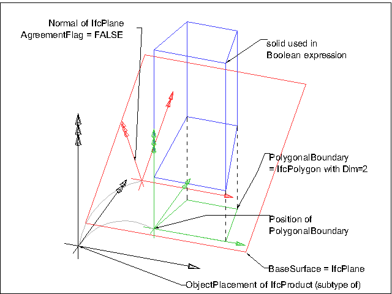

8.8.3.22 IfcPolygonalBoundedHalfSpace
| Halbraum - eingeschränkter Gültigkeitsbereich |
The polygonal bounded half space is a special subtype of a half space solid, where the material of the half space
used in Boolean expressions is bounded by a polygonal boundary. The base surface of the half space is positioned by its
normal relative to the object coordinate system (as defined at the supertype IfcHalfSpaceSolid), and its
polygonal (with or without arc segments) boundary is defined in the XY plane of the position coordinate system
established by the Position attribute, the subtraction body is extruded perpendicular to the XY plane of the
position coordinate system, that is, into the direction of the positive Z axis defined by the Position
attribute.
The boundary is defined by a 2 dimensional polyline (or 2 dimensional composite curve, consisting of straight
segments and circular arc segments) within the XY plane of the position coordinate system. The side of the surface
which is in the half space is determined by the surface normal and the agreement flag. If the agreement flag is TRUE,
then the subset is the one the normal points away from. If the agreement flag is FALSE, then the subset is the one the
normal points into.
NOTE A polygonal bounded half space is not a subtype of IfcSolidModel, half
space solids are only useful as operands in Boolean expressions.
Figure 292 illustrates a polygonal bounded half space.
 |
- Black coordinates indicate the object coordinate system (usually provided by IfcLocalPlacement).
- Green coordinates indicate the position coordinate system; the PolygonalBoundary is given within this
coordinate system. It is provided by IfcPolygonalBoundedHalfSpace.Position. This coordinate system is relative
to the object coordinate system. The extrusion direction of the subtraction body is the positive Z axis.
- Red coordinates indicate the normal of the plane. It is provided by the BaseSurface
(IfcSurface.Position). This normal is also relative to the object coordinate system.
|
|
Figure 292 — Polygonal half space geometry
|
|
The polygonal bounded half space is used to limit the volume of the half space in Boolean difference expressions. Only
the part that is defined by a theoretical intersection between the half space solid and an extruded area solid, defined
by extruding the polygonal boundary, is used for Boolean expressions.
The PolygonalBoundary defines the 2D polyline which bounds the effectiveness of the half space in Boolean
expressions. The BaseSurface is defined by a plane, and the normal of the plane together with the
AgreementFlag defines the side of the material of the half space.
HISTORY New entity in IFC2x.
Informal Propositions:
- The IfcPolyline or the IfcCompositeCurve providing the PolygonalBoundary shall be closed.
- If the PolygonalBoundary is given by an IfcCompositeCurve, it shall only have
IfcCompositeCurveSegment's of type IfcPolyline, or IfcTrimmedCurve (having a
BasisCurve of type IfcLine, or IfcCircle)
- The BaseSurface defined at supertype IfcHalfSpaceSolid shall be of type IfcPlane
- The normal of the plane, being the BaseSurface, shall not be perpendicular to the z-axis of the position coordinate system
XSD Specification:
<xs:element name="IfcPolygonalBoundedHalfSpace" type="ifc:IfcPolygonalBoundedHalfSpace" substitutionGroup="ifc:IfcHalfSpaceSolid" nillable="true"/>
<xs:complexType name="IfcPolygonalBoundedHalfSpace">
<xs:complexContent>
<xs:extension base="ifc:IfcHalfSpaceSolid">
<xs:sequence>
<xs:element name="Position" type="ifc:IfcAxis2Placement3D" nillable="true"/>
<xs:element name="PolygonalBoundary" type="ifc:IfcBoundedCurve" nillable="true"/>
</xs:sequence>
</xs:extension>
</xs:complexContent>
</xs:complexType>
EXPRESS Specification:
|
ENTITY IfcPolygonalBoundedHalfSpace
|
|
|
| BoundaryDim | : | PolygonalBoundary.Dim = 2; | | BoundaryType | : | SIZEOF(TYPEOF(PolygonalBoundary) * [
'IFCGEOMETRYRESOURCE.IFCPOLYLINE',
'IFCGEOMETRYRESOURCE.IFCCOMPOSITECURVE']
) = 1; |
|
 EXPRESS-G diagram
EXPRESS-G diagram
Attribute Definitions:
| Position | : |
Definition of the position coordinate system for the bounding polyline and the base surface.
|
| PolygonalBoundary | : |
Two-dimensional polyline bounded curve, defined in the xy plane of the position coordinate system.
IFC2x3 CHANGE The attribute type has been changed from IfcPolyline to its supertype IfcBoundedCurve with upward compatibility for file based exchange.
|
Formal Propositions:
| BoundaryDim | : | The bounding polyline should have the dimensionality of 2. |
| BoundaryType | : |
Only bounded curves of type IfcCompositeCurve, or IfcPolyline are valid boundaries.
|
Inheritance Graph:
|
ENTITY IfcPolygonalBoundedHalfSpace
|
|
|
| BaseSurface | : | IfcSurface; |
| AgreementFlag | : | BOOLEAN; |
|
 Link to this page
Link to this page